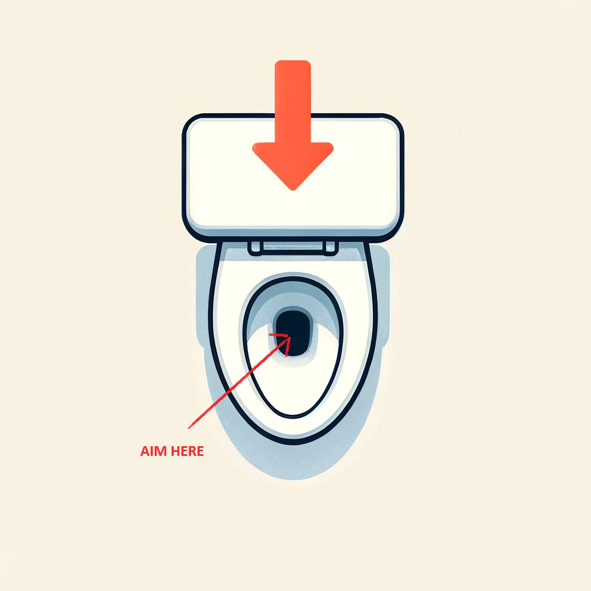

How it Works
Follow these instructions to measure the duration of your pee stream accurately:
- Prepare Your Device: Ensure your smartphone's microphone is functional and not covered by any cases or obstructions.
- Position Your Device: Place your smartphone on a stable surface near the toilet where it can clearly pick up sound without risk of falling in. Do not hold the device in your hand to avoid accidents.
- Start the Recording: Tap the "Record Audio" button and then accept browser permissions to use microphone. (Check Privacy Notice)
- Aim Accurately: Aim your urine stream directly at the water in the toilet. The microphone will pick up the sound of the urine hitting the water, which is used to measure the duration of the stream. 
- Complete the Process: Once you have finished, tap “Stop”. The app will process the audio to determine the continuous duration of the stream hitting the water.
- View Results: The duration of your stream will be displayed, along with the approximate volume off the liquid you produced.
Safety and Precautions:
- Keep your device away from direct contact with water to prevent damage.
- Be cautious of slipping in the bathroom, especially near wet surfaces.
- Ensure privacy and discretion while using the app.